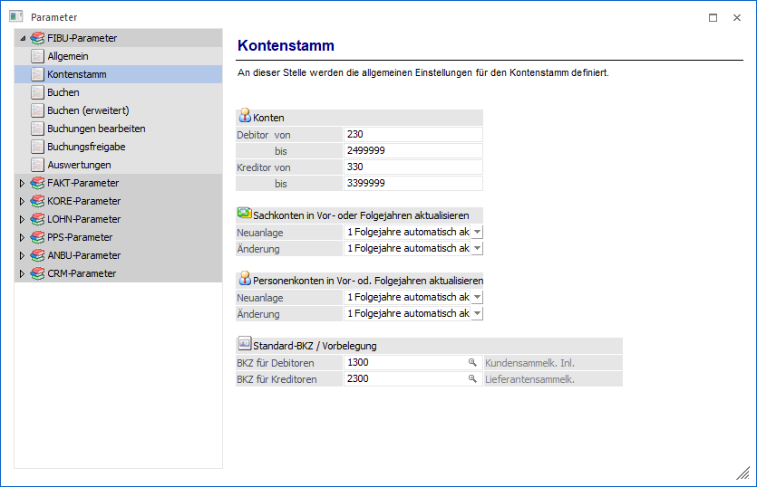
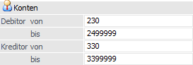
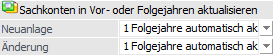
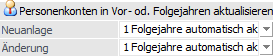
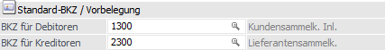

Über den Bereich "FIBU-Parameter - Kontenstamm" können allgemeine Einstellungen für den Kontenstamm vorgenommen werden.
Hinweis
Standardmäßig wird das Fenster in einem "Lesemodus" geöffnet, d.h. es können die bestehenden Einstellungen kontrolliert, Änderungen allerdings nicht durchgeführt werden. Hierfür muss zunächst mit Hilfe des Buttons "Bearbeiten" der "Bearbeitungsmodus" aktiviert werden. Alternativ kann diese Aktivierung auch über das Kontextmenü der rechten Maustaste (Funktion "Applikation xxx bearbeiten") erfolgen.

Konten

Die Vergabe von Kontonummern unterliegt bezüglich des Nummernsystems keiner Einschränkung, d.h. auch alphanumerische Nummern sind möglich. Die Anzahl der Stellen ist hierbei auf maximal 20 Zeichen begrenzt. Diese Definition gilt dabei für den gesamten Mandanten (d.h. für WinLine FIBU, sowie für WinLine FAKT).
Bei der Anlage von Debitoren bzw. Kreditoren wird geprüft, ob die neu angelegte Kontonummer im definierten Bereich liegt. Ist dies nicht der Fall, wird eine Warnung angezeigt.
Wird die Kontonummer dennoch verwendet, was zulässig ist, wird diese Kontonummer bei gewissen Auswertungen (z.B. OP-Blatt) nicht mit angedruckt - weil das Konto eben nicht im definierten Bereich liegt.
Ø Debitor von / bis
An dieser Stelle kann der grundsätzliche Nummernbereich für Debitoren (Kunden) definiert werden.
Ø Kreditor von / bis
An dieser Stelle kann der grundsätzliche Nummernbereich für Kreditoren (Lieferanten) definiert werden.
Sachkonten in Vor- oder Folgejahren aktualisieren

Die folgenden Einstellungen sind mandantenabhängig, aber jahresübergreifend. D.h. die gewählten Einstellungen werden in alle Wirtschaftsjahre des Mandanten übernommen.
Mit dieser Einstellung kann entschieden werden, wie sich eine Neuanlage oder eine Änderung von Sachkonten auf die anderen Wirtschaftsjahre auswirken soll. Dabei gibt es unterschiedliche Einstellungen:
Ø Neuanlage
ü 0 - nicht aktualisieren
Das
Konto wird nur im aktuellen Wirtschaftsjahr angelegt.
ü 1 - Folgejahre automatisch
aktualisieren
Das Konto wird automatisch auch in Folgejahren (sofern
vorhanden) angelegt, wobei auch geprüft wird, ob das Konto ggf. nicht schon
vorhanden ist.
ü 2 - Vor- und Folgejahre
automatisch aktualisieren
Das Konto wird automatisch in Vor- und Folgejahren
angelegt, wobei auch geprüft wird, ob das Konto ggf. nicht schon vorhanden
ist.
ü 3 - Manuelle Auswahl
Bei dieser
Option kann bei jeder Neuanlage gewählt werden, auf welche Wirtschaftsjahre das
Konto verteilt werden soll. D.h. bei Speicherung des Sachkontos wird das Fenster
"Mandanten-/Jahres-Selektion" geöffnet, über welches die Entscheidung getroffen
werden kann.
Ø Änderung
ü 0 - nicht aktualisieren
Das
Konto wird nur im aktuellen Wirtschaftsjahr geändert.
ü 1 - Folgejahre automatisch
aktualisieren
Das Konto wird automatisch auch in Folgejahren (sofern
vorhanden) geändert.
ü 2 - Vor- und Folgejahre
automatisch aktualisieren
Das Konto wird automatisch in Vor- und Folgejahren
geändert.
ü 3 - Manuelle Auswahl
Bei dieser
Option kann bei jeder Änderung gewählt werden, auf welche Wirtschaftsjahre die
Änderung übernommen werden soll. D.h. bei Speicherung des Sachkontos wird das
Fenster "Mandanten-/Jahres-Selektion" geöffnet, über welches die Entscheidung
getroffen werden kann.
Hinweis 1
Wenn ein neu angelegtes Konto bereits in einem anderen Wirtschaftsjahr vorhanden ist, dann wird - auch wenn bei der Neuanlage die Option " Folgejahre automatisch aktualisieren" oder " Vor- und Folgejahre automatisch aktualisieren" eingestellt ist - zunächst eine entsprechende Meldung ausgegeben. Anschließend wird das Fenster "Mandanten-/Jahres-Selektion" geöffnet über welches ersichtlich ist, in welchen Jahren das Konto bereits vorhanden ist. Dort kann dann auch ausgewählt werden kann, in welche Jahre das Konto übernommen werden soll. Wenn auch das Wirtschaftsjahr ausgewählt wird, in welchem das Konto bereits vorhanden ist, so wird das bestehende Konto überschrieben.
Hinweis 2
Wenn Sachkonten in Vor-/Folgejahre oder in Konsolidierungsmandanten aktualisiert werden, so werden die Einstellungen der Felder "Als Hauptbuchkonto verwenden" und "Hauptbuchkonto" nicht berücksichtigt, da einiges beim Ändern dieser Felder eingestellt werden muss (siehe Fenster "Hauptbuchkonten" in WinLine FIBU). D.h. das Definieren und Zuordnen von Hauptbuchkonten muss in jedem Mandanten / Wirtschaftsjahr einzeln vorgenommen werden, wobei allerdings beim Jahreswechsel die Einstellungen der beiden Felder natürlich übernommen werden.
Personenkonten in Vor- oder Folgejahren aktualisieren

Die folgenden Einstellungen sind mandantenabhängig, aber jahresübergreifend. D.h. die gewählten Einstellungen werden in alle Wirtschaftsjahre des Mandanten übernommen.
Mit dieser Einstellung kann entschieden werden, wie sich eine Neuanlage oder eine Änderung von Personenkonten auf die anderen Wirtschaftsjahre auswirken soll. Dabei gibt es unterschiedliche Einstellungen:
Ø Neuanlage
ü 0 - nicht aktualisieren
Das
Konto wird nur im aktuellen Wirtschaftsjahr angelegt.
ü 1 - Folgejahre automatisch
aktualisieren
Das Konto wird automatisch auch in Folgejahren (sofern
vorhanden) angelegt, wobei auch geprüft wird, ob das Konto ggf. nicht schon
vorhanden ist.
ü 2 - Vor- und Folgejahre
automatisch aktualisieren
Das Konto wird automatisch in Vor- und Folgejahren
angelegt, wobei auch geprüft wird, ob das Konto ggf. nicht schon vorhanden
ist.
ü 3 - Manuelle Auswahl
Bei dieser
Option wird kann bei jeder Neuanlage gewählt werden, auf welche Wirtschaftsjahre
das Konto verteilt werden soll. D.h. bei Speicherung des Sachkontos wird das
Fenster "Mandanten-/Jahres-Selektion" geöffnet, über welches die Entscheidung
getroffen werden kann.
Ø Änderung
ü 0 - nicht aktualisieren
Das
Konto wird nur im aktuellen Wirtschaftsjahr geändert.
ü 1 - Folgejahre automatisch
aktualisieren
Das Konto wird automatisch auch in Folgejahren (sofern
vorhanden) geändert.
ü 2 - Vor- und Folgejahre
automatisch aktualisieren
Das Konto wird automatisch in Vor- und Folgejahren
geändert.
ü 3 - Manuelle Auswahl
Bei dieser
Option wird kann bei jeder Änderung gewählt werden, auf welche Wirtschaftsjahre
die Änderung übernommen werden soll. D.h. bei Speicherung des Personenkontos
wird das Fenster "Mandanten-/Jahres-Selektion" geöffnet, über welches die
Entscheidung getroffen werden kann.
Hinweis 1
Wenn ein neu angelegtes Konto bereits in einem anderen Wirtschaftsjahr vorhanden ist, dann wird - auch wenn bei der Neuanlage die Option " Folgejahre automatisch aktualisieren" oder " Vor- und Folgejahre automatisch aktualisieren" eingestellt ist - zunächst eine entsprechende Meldung ausgegeben. Anschließend wird das Fenster "Mandanten-/Jahres-Selektion" geöffnet über welches ersichtlich ist, in welchen Jahren das Konto bereits vorhanden ist. Dort kann dann auch ausgewählt werden kann, in welche Jahre das Konto übernommen werden soll. Wenn auch das Wirtschaftsjahr ausgewählt wird, in welchem das Konto bereits vorhanden ist, so wird das bestehende Konto überschrieben.
Hinweis 2
Wenn Personenkonten in Vor-/Folgejahre oder in Konsolidierungsmandanten aktualisiert werden, wird die Einstellung im Feld "Hauptbuchkonto" im Register FIBU nicht berücksichtigt, da einiges noch beim Ändern dieser Felder noch eingestellt werden muss (siehe Fenster "Hauptbuchkonten" in WinLine FIBU). D.h. das Definieren und Zuordnen von Hauptbuchkonten muss in jedem Mandanten/Wirtschaftsjahr einzeln gemacht werden, wobei allerdings beim Jahreswechsel die Einstellung dieses Feldes natürlich übernommen wird.
Standard-BKZ / Vorbelegung

Ø BKZ für Debitoren / BKZ für Kreditoren
In den beiden Eingabefeldern "BKZ für Debitoren" und "BKZ für Kreditoren" kann eine "Standard-BKZ" angegeben werden, welche automatisch bei der Neuanlage eines Personenkontos in die Felder "BKZ1" und "BKZ1 Wechselkonto" eingetragen werden.